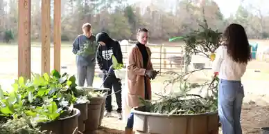
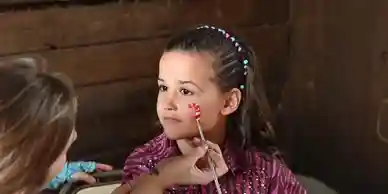
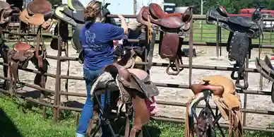

Help Support Our Cause
Financial support and contributions of any amount enable us to continue our goals and mission.
Donations are also accepted through the mail. Send checks or money orders to: Strides of Strength Therapeutic Services, Inc. 2717 Gaston Farm Rd. Chester, SC 29706
Time
If a monetary donation is not in the cards for you right now, please consider volunteering your time towards Strides of Strength Therapeutic Services. We have flexible, year-round, and seasonal opportunities available for those who are interested.
Skills
Not everyone is familiar with horses, so we appreciate whatever special skills you bring to the table! Never leave the house without your tool box? We have jobs that need to be done! Love to clean? Our brushes could use a good scrub!
Items
Check out our Amazon Wish List with horse, therapy, and farm needs. Unique gifts such as sensory trail items and silent auction items for our fundraisers, and/or simple items such as bottled water and snacks for our volunteers are always needed!